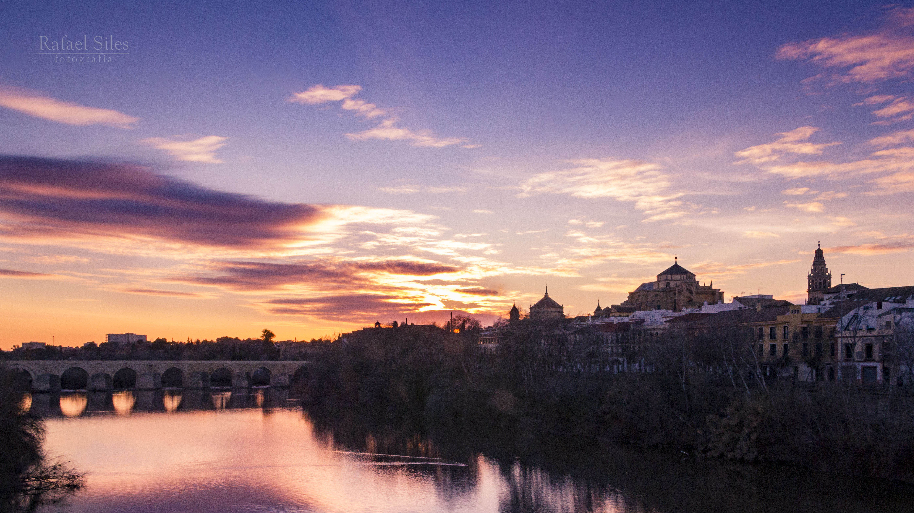

Casco Histórico de Córdoba
El centro histórico de Córdoba es uno de los cascos antiguos más grandes de Europa. En 1984, la Unesco declaró a la mezquita-catedral de Córdoba como Patrimonio de la Humanidad. Más tarde, en 1994, la Unesco expandió esta denominación a gran parte del casco antiguo. El centro histórico posee una gran riqueza monumental conservando grandes vestigios de la época romana, árabe y cristiana.
Los elementos de borde que definen la delimitación del conjunto histórico de Córdoba están formados por las vías de comunicación que coinciden con la antigua muralla, lo que en gran medida ha salvaguardado el centro histórico de los ensanches urbanísticos de finales del siglo XIX y principios del XX, pues éstos transcurren por el perímetro del mismo (avenida Conde Vallellano, Paseo de la Victoria, Ronda de los Tejares, avenida de las Ollerías), creándose así un anillo de espacios libres que protege al Conjunto Histórico de Córdoba.
Historia
El poblamiento de Córdoba se remonta a la Edad del Bronce, si bien la fundación de la ciudad tiene lugar a mediados del siglo II a. C. por el pretor Claudio Marcelo, convirtiéndose en capital de la Hispania Ulterior y más tarde de la Bética, llegando a tomar el título de Colonia Patricia, lo que pone de manifiesto la prosperidad y prestigio de que ya entonces gozaba. Tras la caída del Imperio romano de Occidente, la ciudad cayó bajo poder del Imperio bizantino hasta que fue conquistada en el año 572 por el rey visigodo Leovigildo. Hacia finales del siglo VII, las luchas civiles y las intrigas políticas debilitaron el poder visigodo, lo que facilitó la penetración de los musulmanes en la península en el año 711 y la rápida conquista del país, que permanecería bajo la dependencia del Califato de Damasco. En el año 717 Córdoba se convirtió por sus características geográficas y sus posibilidades estratégicas en capital de al-Ándalus; en 756 el príncipe omeya Abd al-Rahman I logra erigirse con el poder en al-Ándalus y establece el Emirato Independiente de Córdoba; en 929 Abd al-Rahman III proclama el Califato de Córdoba. La ciudad alcanza entonces el cenit de su esplendor.
Tras la caída del Califato, ya a principios del siglo XI, Córdoba entra en decadencia política, aunque no cultural. En 1236, el rey Fernando III de Castilla conquista la ciudad, que jugaría desde entonces un papel trascendental en las luchas contra el Reino nazarí de Granada y se convertiría por ello en residencia habitual de los reyes de Castilla. En el siglo XVII Córdoba se sumerge en una profunda crisis que incide negativamente en el desarrollo de la ciudad. En el siglo XVIII se asistirá a una recuperación y cobrará impulso la renovación urbana, si bien en la segunda mitad de esta centuria se llevarán a cabo algunas actuaciones negativas, como la ruptura de la muralla medieval, que vaticinan la vocación destructiva del siglo XIX. El notable crecimiento demográfico del siglo XX potenció el nacimiento de nuevos barrios, que a partir de la segunda década del siglo han ido rodeando la ciudad.
De cada período histórico aquí reseñado se conservan importantes testimonios materiales en la ciudad. Puentes, murallas, torres, puertas de muralla, molinos, vestigios de mezquitas, iglesias, conventos, palacios, etc., engrosan el vasto y rico patrimonio de bienes inmuebles de Córdoba, a lo que habría que sumar un patrimonio mueble integrado por piezas de pintura, escultura e imaginería, platería y artes decorativas en general de extraordinario valor.
Monumentos
Entre los monumentos que se pueden encontrar en el Casco Histórico de Córdoba tenemos:
- Mezquita de Códoba
- Palacio Episcopal
- Alcázar de los Reyes Cristianos
- Torre de San Juan
- Plaza de la Corredera
- Caballerizas Reales
- Barrio del Alcázar Viejo
- Iglesias Fernandinas
- Palacio de Viana